Contenido
Configuración de práctica: en Kiri:Moto se ha seleccionado Machine «Prusa.mini» y Profile «Prusa Mini 0.20mm». Es una simulación didáctica: el perfil de catálogo no está validado para las impresoras del centro. Seleccionarlo no autoriza a imprimir.
Del sólido a las trayectorias
El archivo STL describe superficies mediante triángulos. El laminador calcula cortes horizontales y trayectorias. El G-code añade órdenes de movimiento, extrusión y temperatura para una máquina. Un STL correcto no garantiza un G-code compatible.
Dos estados distintos. Simulación: importar, comparar parámetros y estudiar capas con un perfil identificado; no ejecutar el resultado en una impresora. Preparado para imprimir: perfil validado por la persona responsable para el modelo exacto de máquina, boquilla, material y configuración; revisión del trabajo concreto y autorización de ejecución. Un perfil «parecido» no sirve como validación.
Preparar Kiri:Moto
Un perfil reúne dimensiones útiles, origen, límites y órdenes propias de una impresora. También importa su versión.
- Abre Kiri:Moto y elige FDM. Comprueba el nombre de Machine y Profile. Para una fabricación real, carga o selecciona exactamente los que entregue el docente, con su identificación de máquina y versión.
- Si no hay perfil validado, usa el perfil de simulación indicado en clase y anota su nombre. El trabajo termina en capturas y comparación de parámetros.
- Importa el STL, comprueba unidades y tamaño de la caja envolvente, número de cuerpos y cara apoyada. En el reto 3 deben aparecer caja y tapa separadas.
- Fija los parámetros del ejercicio. Como ejemplo de comparación: capa 0,2 mm, tres paredes, tres capas superiores e inferiores y 15 % de relleno. Son valores de simulación; no una receta autorizada para las impresoras del taller.
Resultado esperado: Modelo colocado y configuración identificada.
Comprueba: La base del modelo coincide con la bandeja y las dimensiones coinciden con el CAD. En algunas interfaces el relleno se escribe como fracción: 0,15 equivale a 15 %.
Error frecuente: Suponer que Arrange corrige unidades, orientación o compatibilidad. Si el tamaño es erróneo, revisa primero cómo se importó el STL.
Leer Slice y Preview
Slice genera las capas; Preview muestra las trayectorias. La vista exterior opaca es insuficiente para revisar el interior.
- Pulsa Cortar/Slice y después Vista Previa/Preview. Comprueba la leyenda de tipos: los colores dependen de la vista y la versión, no los memorices.
- Muestra sólo la primera capa. Localiza contorno y relleno sólido de la base; los agujeros previstos deben permanecer abiertos.
- Avanza hasta una capa interior: señala perímetros (bordes), relleno (patrón interior) y desplazamientos sin extrusión. Activa o desactiva cada tipo de la leyenda para distinguirlo.
- Recorre el cambio de base a pared o de placa a pestaña. Cada zona nueva debe tener apoyo o una estrategia de puente/soporte justificada.
- Para la C erguida, compara soportes desactivados y activados: localiza el material auxiliar bajo el brazo superior. Comprueba que se pueda retirar sin dañar la pieza.
- Guarda capturas identificadas por modelo, perfil, parámetros y capa. Anota las estimaciones sólo si las muestra la aplicación; no inventes números.
Resultado esperado: Un conjunto de capturas que explica qué hace la boquilla y dónde puede haber un problema.
Comprueba: Primera capa, perímetros, relleno, soportes y desplazamientos identificados por su función, con el número/altura de capa visible.
Error frecuente: Confundir desplazamiento sin plástico con un cordón suspendido. Revisa la leyenda y el tipo de trayectoria.
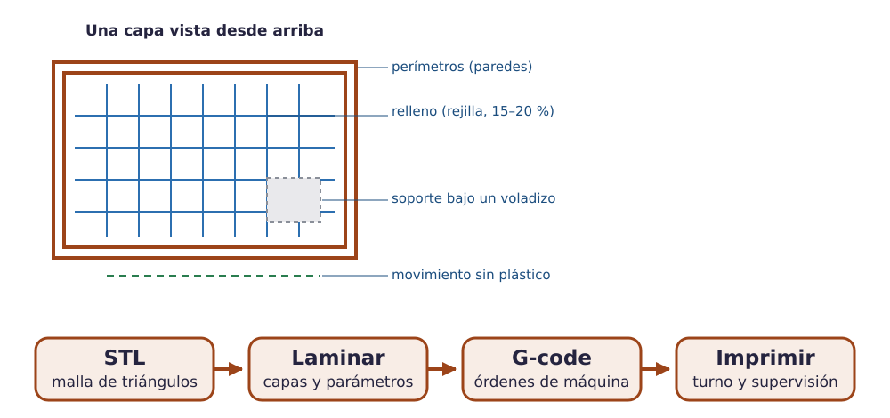
Recorrido visual real por el laminador
Estas capturas proceden del modelo de demostración ya presente en Kiri:Moto. Son una práctica de lectura de capas, no el llavero ni una impresión realizada. Configuración observada: Prusa.mini / Prusa Mini 0.20mm, capa 0,2 mm, dos paredes, cinco capas superiores y cuatro de base. En las dos vistas de soportes se activó automatic, ángulo 50° y densidad 0,25: valores de esta demostración, no recomendaciones universales. Usa los controles de intervalo para aislar las capas indicadas y la leyenda para comprobar cada tipo.
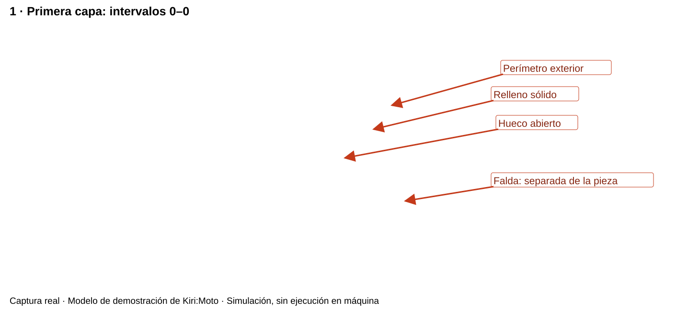
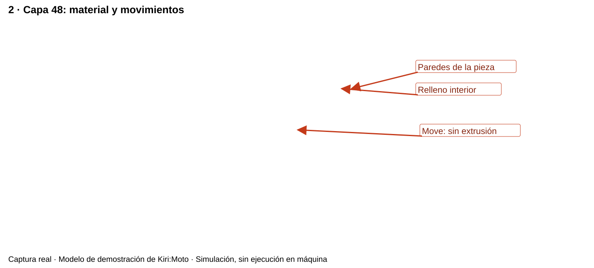
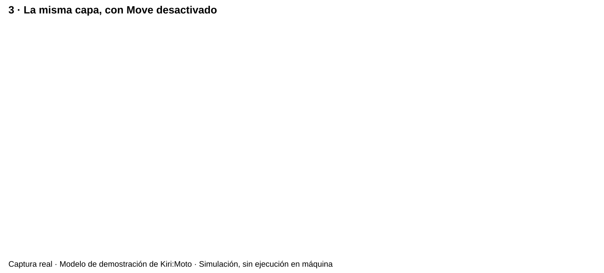
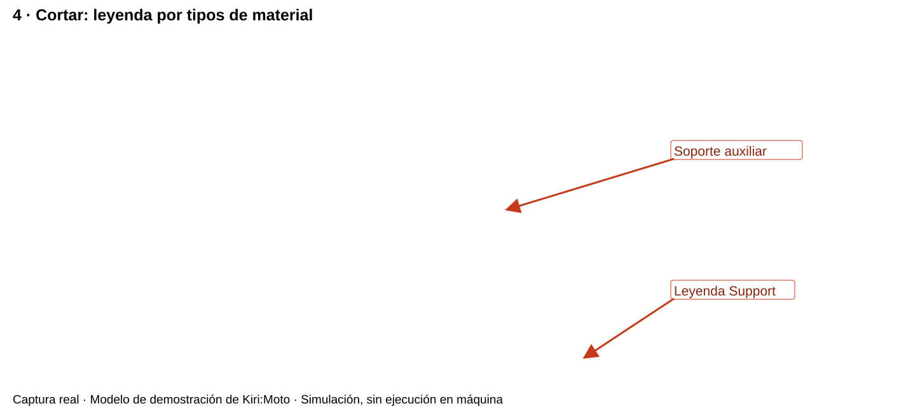
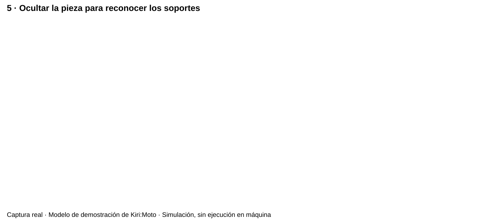
Experimento: cambia una variable cada vez
| Ensayo | Capa | Relleno | Resto |
|---|---|---|---|
| A, referencia | 0,2 mm | 15 % | Mismo STL, orientación, paredes, capas sólidas, soportes y perfil. |
| B, efecto de relleno | 0,2 mm | 30 % | Igual que A. |
| C, efecto de altura | 0,3 mm | 15 % | Igual que A; registra el cambio del espesor de techo/fondo si conservas su número de capas. |
Compara A/B para el relleno; A/C para la altura de capa, indicando el efecto asociado en techos y fondos. Para aislar aún más la altura, conserva el espesor total de techo/fondo ajustando el número de capas y decláralo. Registra tiempo y longitud, masa o volumen tal como los dé el programa, con unidades.
Piensa y comprueba. ¿15 % de relleno significa gastar el 15 % o un tercio del plástico de una pieza maciza?
Ver explicación
Ninguna proporción es fija. Las paredes, fondos, techos y soportes también consumen material. Compara los totales calculados para esa geometría con los mismos parámetros.
Ejemplo real: interpretar una comparación
En el modelo de demostración anterior se reprodujeron tres laminados con Prusa.mini / Prusa Mini 0.20mm. Se fijaron tres paredes, tres capas superiores y tres de base, relleno hexagonal y soportes automáticos a 50° con densidad 0,25. Se mantuvieron modelo, orientación y el resto de parámetros. Son datos de esa simulación, no tiempos ni masas de la K1 o la Sermoon.
| Ensayo | Capa / relleno | Tiempo estimado | Filamento | Masa calculada |
|---|---|---|---|---|
| A | 0,2 mm / 15 % | 1 h 19 min 19 s | 2565 mm | 7,71 g |
| B | 0,2 mm / 30 % | 1 h 25 min 08 s | 2873 mm | 8,64 g |
| C | 0,3 mm / 15 % | 55 min 51 s | 2632 mm | 7,91 g |
La masa se calcula con densidad introducida de 1,25 g/cm³. De A a B se duplica el porcentaje de relleno, pero la masa estimada sólo aumenta 0,93 g (aproximadamente un 12 %): paredes, superficies sólidas y soportes también consumen. C tiene menos capas y menor tiempo estimado, pero conserva tres capas de techo/base y cambia su espesor; por eso no equivale a «la misma pieza con idénticas superficies sólidas». La resistencia no se ha ensayado.
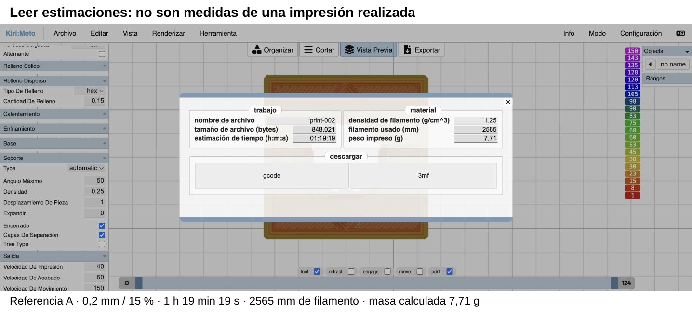
Interpreta. ¿Qué dos ensayos comparas para estudiar sólo el relleno? ¿Puedes deducir que B resiste el doble?
Ver explicación
A y B, porque conservan altura de capa y los demás ajustes. No puedes deducir el doble de resistencia: no se ha realizado un ensayo y el porcentaje de relleno no es una ley de resistencia.
Del llavero de Tinkercad a sus capas
Este ejemplo sigue el mismo llavero de 40 × 25 × 7 mm construido en CAD. Se exportó su STL y se importó en Kiri:Moto. Se reprodujo el laminado con Machine Prusa.mini y Profile Prusa Mini 0.20mm: capa de 0,2 mm, tres paredes, tres capas superiores y tres de base, relleno hexagonal al 15 %. Es una simulación; no es un perfil validado para K1 o Sermoon.
- Importa el STL y comprueba escala, orientación y apoyo de la base. Conserva el hueco: no actives una opción que convierta los vacíos en sólido.
- Pulsa Cortar y Vista Previa. Ve a la primera capa y busca el contorno exterior de la pieza y el agujero.
- Muestra una sola capa interior: diferencia paredes y relleno. Después sube por encima de la base y comprueba que continúa el relieve.
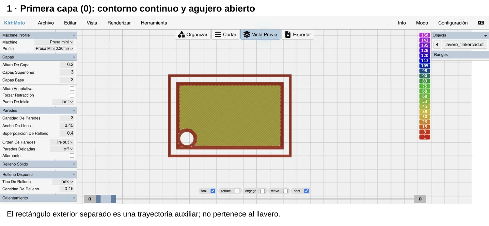
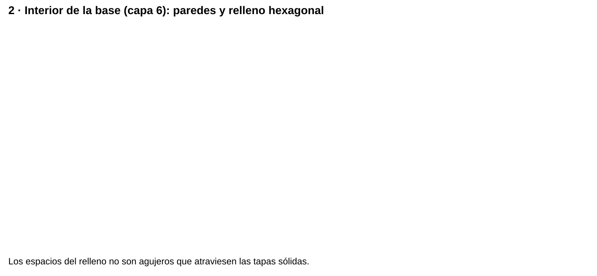
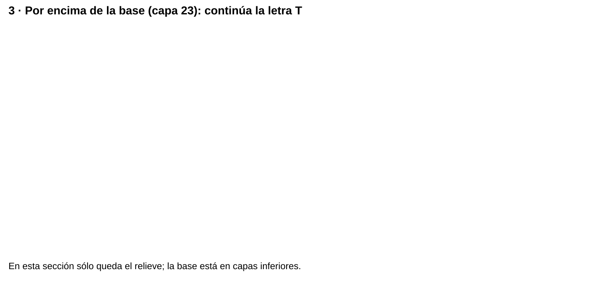
Resultado comprobado: 35 capas, numeradas de 0 a 34. El agujero queda abierto, la base tiene relleno interior y la letra continúa por encima. El resumen estima 26 min 59 s, 1310 mm de filamento y 3,94 g con densidad de 1,25 g/cm³. Son cálculos del programa: todavía no se ha impreso ni pesado esta pieza.
Comprueba: recorre las capas de abajo arriba. La forma debe coincidir con el CAD y ninguna zona de la letra debe aparecer aislada en el aire.
Error frecuente: confundir la vista acumulada de varias capas con una sección única. Mira los dos números del control de capas: para observar una sola sección deben coincidir.
Predice. En una capa situada por encima de los 4 mm de la base, ¿debe aparecer el rectángulo completo?
Ver explicación
No: en una sección única por encima de la base sólo aparece la letra. Si ves también el rectángulo, comprueba si estás mostrando varias capas acumuladas.
Seguir las capas de caja y tapa
El STL del reto 3 se importó y laminó sin modificar su geometría. Caja y tapa aparecen separadas, aunque proceden del mismo archivo. Con la configuración de simulación anterior se generan 125 capas (0–124).
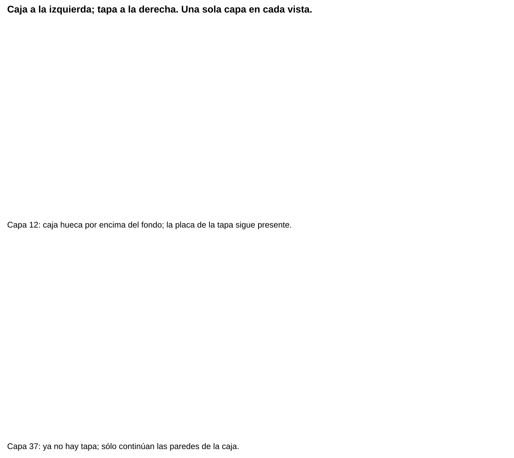
Comprobación reproducida: se observaron las capas 0, 12, 14, 15, 24 y 37. La transición placa/pestaña mantiene apoyo y la caja conserva fondo. El resumen estima 2 h 14 min 34 s, 7641 mm de filamento y 22,97 g. No se ha comprobado el encaje físico ni la estanqueidad: el laminado no sustituye esas pruebas.
Detecta el error. En una sección aislada por encima del fondo, ves toda la caja rellena de trayectorias. ¿Es el resultado previsto?
Ver explicación
No. Primero comprueba que no estés acumulando capas inferiores. Si la sección única sigue cerrada, revisa el vaciado del CAD y que no esté activada una opción que convierta los vacíos en sólido.
Comprobar el recipiente hexagonal
El STL del reto 2 también se reprodujo en el laminador con la configuración de simulación anterior. Generó 400 capas (0–399). La primera capa cierra la base; en la capa 39 el interior ya está vacío. La capa 239 corta el texto lateral: observa sus salientes en el lado inferior derecho, continuos con el contorno de la pared.
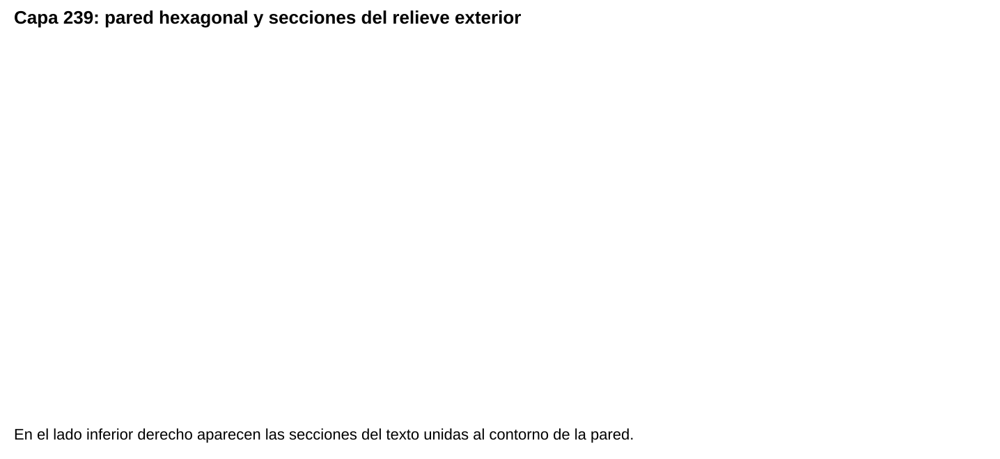
Resultado: base cerrada, cavidad abierta y trayectorias del relieve lateral generadas. Estimación: 2 h 51 min 54 s, 10284 mm de filamento y 30,92 g. La unión digital no demuestra resistencia física. Antes de fabricar revisa los pequeños voladizos de las letras y prueba el resultado con el perfil real.
Comprueba: combina la primera capa, una sección del recipiente hueco y una que atraviese el texto. Error frecuente: interpretar una sección horizontal de las letras como texto deformado sin consultar las capas vecinas.
Verificar los huecos de la placa
El STL del reto 1 genera 20 capas (0–19) con la configuración de simulación anterior. Se revisaron la primera, la capa interior 9 y la última: los cuatro agujeros circulares y la ranura permanecen abiertos.
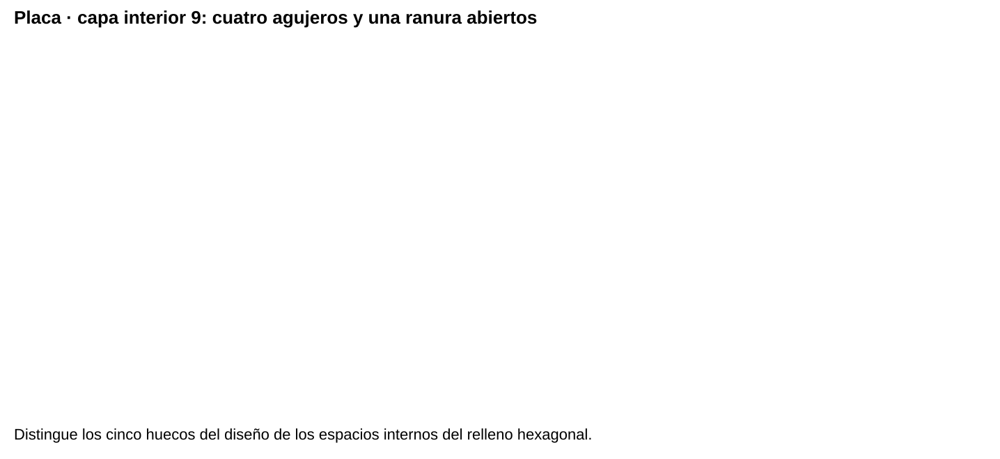
Resultado: estimación de 46 min 13 s, 2040 mm de filamento y 6,13 g. La inspección de capas complementa la geometría del STL; todavía hay que imprimir y medir para comprobar diámetros y ajuste real.
Comprueba: cuenta los cinco huecos en las caras inferior y superior y sigue sus paredes por las capas intermedias. Error frecuente: afirmar que un agujero es pasante mirando sólo la cara superior.
Comparar el mismo gancho en dos orientaciones
Estas capturas reales corresponden a la misma geometría de C del plano: 50 × 45,5 mm de perfil, 10 mm de espesor y abertura de 25,5 mm. Se prepararon dos copias, una tumbada y otra girada 90°. El giro cambia el apoyo y la dirección de las capas, no las dimensiones propias del gancho.
Se mantuvo la configuración de simulación Prusa.mini / Prusa Mini 0.20mm, con capas de 0,2 mm, tres paredes, tres capas superiores e inferiores y relleno hexagonal al 15 %. Se comparó Type disabled con automatic, ángulo 50° y densidad 0,25. Son parámetros de esta prueba, no valores universales.
- Mira ambas piezas desde el frente y relaciona su posición con el esquema de orientación.
- Lamina sin soportes: identifica el espacio vacío bajo el brazo superior de la C erguida. Es un voladizo, con un extremo libre.
- Activa los soportes y vuelve a laminar. Comprueba dónde aparece material auxiliar y cómo podría retirarse.
- En Cortar, oculta shells, solid fill y sparse fill y deja support visible para aislarlo. Después restaura la vista. Ocultar una categoría no cambia la geometría ni desactiva su generación.
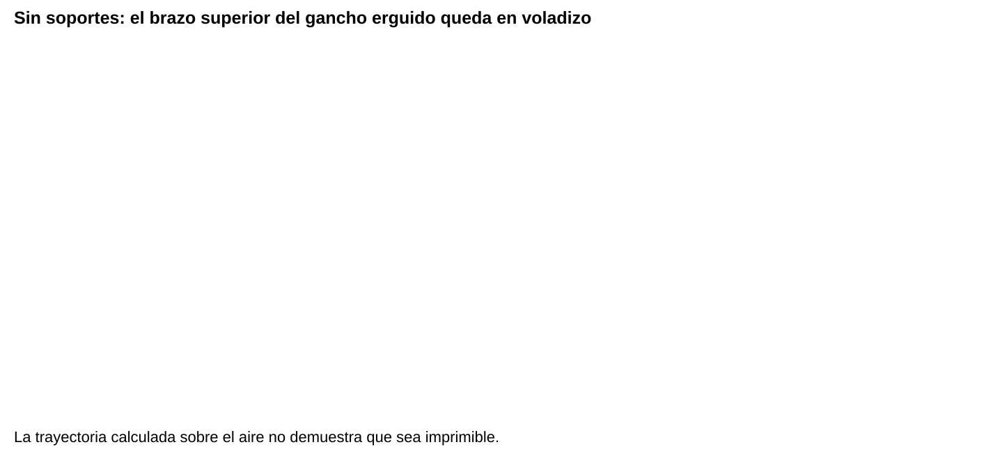
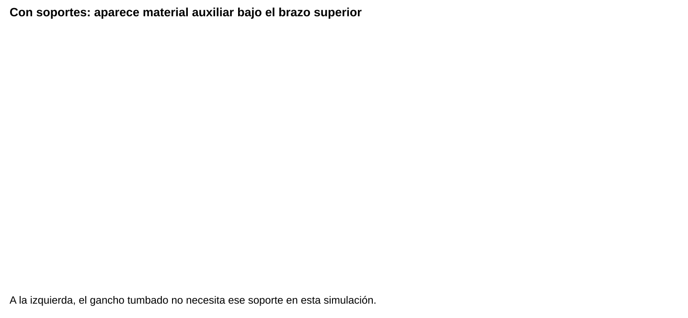
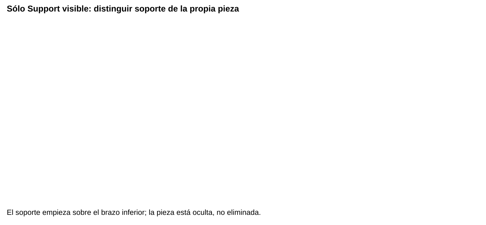
| Simulación de las dos piezas juntas | Tiempo estimado | Filamento | Masa calculada |
|---|---|---|---|
| Sin soportes | 2 h 23 min 40 s | 6682 mm | 20,09 g |
| Con soportes | 2 h 57 min 09 s | 8065 mm | 24,25 g |
Resultado: al activar soportes aumenta la estimación conjunta en 33 min 29 s y 4,16 g. Estos totales no son medidas individuales de cada orientación. La simulación sin soportes es una comparación para detectar el problema, no una propuesta autorizada para imprimir el gancho erguido.
Comprueba: la bandeja y las capas son horizontales en ambos casos; identifica qué superficie apoya y dónde la capa nueva pierde el apoyo. Relaciona después la dirección de carga con el esquema del capítulo de diseño. Error frecuente: concluir que la orientación con menos soportes garantiza soportar 5 kg. La resistencia depende también de material, fabricación, geometría y montaje: hay que ensayarla.
Justifica. ¿Por qué no basta con que Vista Previa dibuje el brazo superior sin soportes?
Ver explicación
La vista muestra trayectorias calculadas, no plástico que haya quedado unido en el aire. El brazo sobresale por un extremo y requiere una estrategia de fabricación justificada. Revisar apoyos precede a fabricar; comprobar la carga requiere un ensayo físico supervisado.
Si fabricamos en Sermoon o en Creality K1
El mismo STL puede prepararse para distintas impresoras, pero las trayectorias y órdenes se calculan de nuevo para la máquina elegida. En el taller hay una Sermoon y una Creality K1 disponibles: el docente asigna la máquina y entrega su perfil comprobado. «Sermoon» es una familia; copia el modelo exacto de la etiqueta antes de seleccionar su perfil.
| Destino | Preparación | Comprobación |
|---|---|---|
| Creality K1 | Selecciona K1 en el laminador indicado por el docente, con la boquilla instalada y el material real. No sustituyas K1 por K1C, K1 Max u otro modelo. | Perfil identificado y probado en esa máquina; tamaño, orientación, capas y estimación revisados. |
| Sermoon | Selecciona la variante exacta que confirme el docente y su perfil validado. No elijas otra Sermoon por semejanza. | Mismas comprobaciones, con los límites y órdenes de esa variante. |
| Prusa.mini en Kiri:Moto | Referencia para el ejercicio de simulación descrito aquí. | Capturas y comparación de capas; su G-code no se envía a la K1 ni a la Sermoon. |
- Anota máquina exacta, laminador y versión, perfil y versión, boquilla, material y parámetros.
- Importa el STL y repite las comprobaciones de capas de este capítulo.
- Identifica las capturas y el archivo con su destino. Si cambia la máquina, repite el laminado con su perfil.
- Entrega el trabajo a la persona responsable para revisión y asignación de turno.
Resultado esperado: cada trabajo tiene un destino inequívoco. Comprueba: el destino del archivo coincide con la máquina asignada. Error frecuente: reutilizar el G-code de la otra impresora porque el objeto es el mismo.
Las estimaciones de K1 y Sermoon se registran por separado: la rapidez anunciada de una impresora no equivale al tiempo de tu pieza. Con perfil validado y turno asignado, la impresión se organiza fuera de las clases; en clase se diseñan, revisan y documentan las piezas.
Documentación del fabricante para el responsable: manual y software de K1. Un perfil del fabricante es un punto de partida; su presencia en el programa no acredita la comprobación de la máquina del taller.
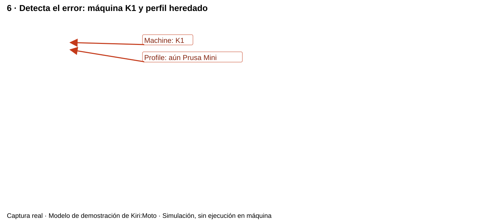
Comprobación reproducida: Kiri:Moto ofrece Creality.K1 y Creality.Sermoon.D1 en Machine. La presencia de D1 no identifica la Sermoon del centro. Seleccionar K1 conservó el perfil de proceso anterior: revisa Machine y Profile por separado. Para producir, carga la pareja de perfiles validada por el responsable.
De la simulación a la máquina
La persona responsable valida el perfil mediante documentación de la impresora, límites, origen, unidades, extrusor, temperaturas, movimientos iniciales/finales y una prueba supervisada. Después revisa cada trabajo y la cola. Sólo entonces se exporta el archivo de máquina autorizado. Guardad nombre y versión de perfil, modelo y parámetros con la evidencia; si cambian, volved a revisar.
El inicio real se observa bajo supervisión: cordones adheridos y unidos, sin arrastre ni despegue. Si falla, avisad y detened según las indicaciones del responsable; nunca sujetéis una pieza durante la impresión. Una primera capa correcta no garantiza que todo el trabajo vaya a salir bien.
Corte digital y alternativa manual
Un láser, un plóter de cuchilla y una fresadora siguen trayectorias digitales distintas, con requisitos específicos de material y seguridad. Un dibujo vectorial puede definir un contorno de corte 2D; una fresadora también puede mecanizar volúmenes. En este taller no contamos con cortadora digital: las piezas planas se marcan y cortan manualmente, tras demostración. Una plantilla 1:1 debe incluir una distancia de control: imprime sin «ajustar a página» y mide esa distancia antes de usarla.
Referencia: Órdenes y macros de máquina en Kiri:Moto.
Lista desordenada
Ordena el recorrido de SIMULACIÓN mostrado en el capítulo: aquí seleccionamos el perfil antes de importar. No prepara un archivo autorizado para imprimir.
- Exportar STL desde el CAD y conservar el diseño editable
- Seleccionar Prusa.mini como simulación y registrar perfil; ajustar una configuración inicial
- Importar STL y comprobar unidades, dimensiones, cuerpos y apoyo en la bandeja
- Pulsar Cortar y Vista Previa; recorrer primera capa, interior y zonas de unión o voladizo
- Cambiar una sola variable, volver a laminar y comparar trayectorias, tiempo y material
- Guardar capturas y resultados rotulados como simulación; no enviarlos a una máquina